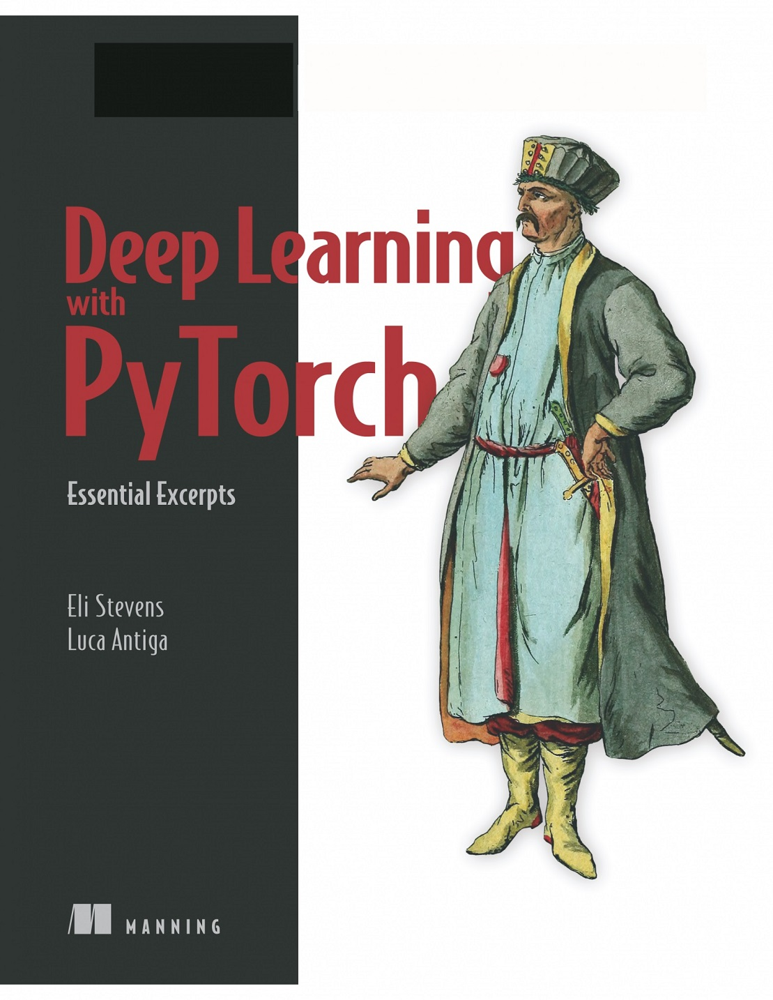
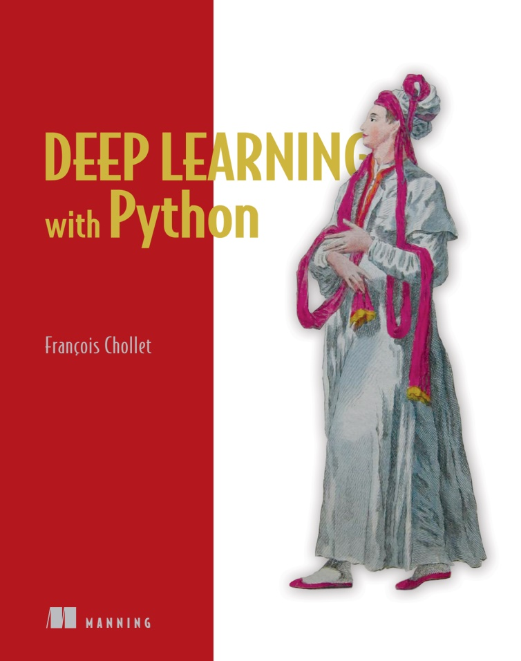
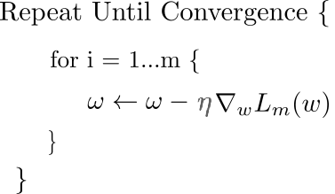
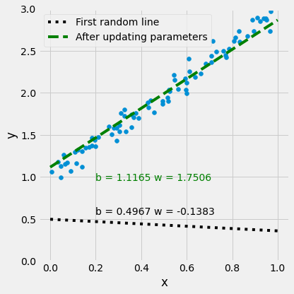
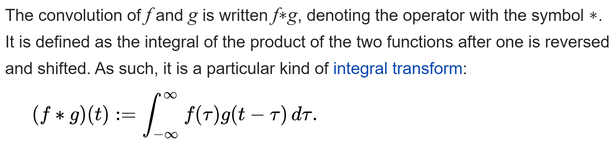
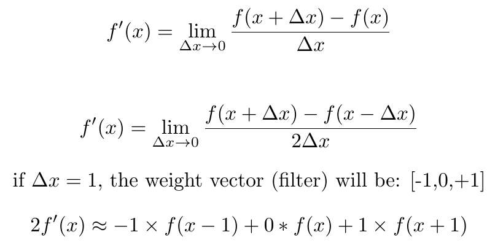
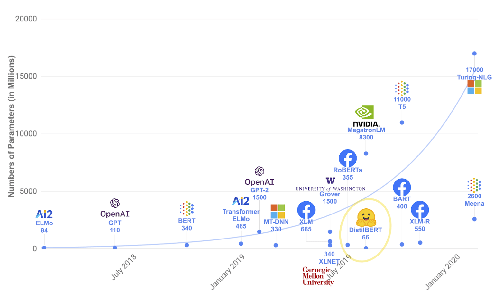
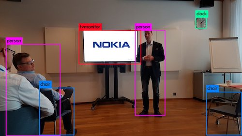
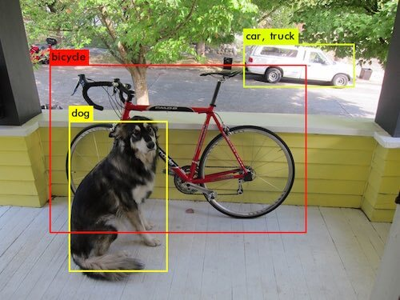

Deep Learning
Workshop
Mahmood Amintoosi
m.amintoosi @ hsu.ac.ir
Github page
زمستان ۱۴۰۰
اسلایدها در حال تکمیل هستند.
دربارهی کارگاه یادگیری عمیق
حوزهی یادگیری عمیق زیرمجموعهای از روشهای یادگیری ماشین است که توجه بسیاری را در چند سال اخیر
به خود معطوف نموده است. تفاوت اصلی یادگیری عمیق با روشهای مرسوم حوزهی یادگیری ماشین، توانایی
آن در یادگیری خودکار ویژگیها است. هستهی اصلی یادگیری در این روشها مبتنی بر الگوریتم گرادیان
کاهشی و بخش عملی آن متکی بر توانایی مشتقگیری خودکار ازتوابع هدف است. در این کارگاه به معرفی
مبانی نظری این حوزه و برخی کاربردهای آن پرداخته شده و شیوهی شروع به کار عملی در این حوزه با
انجام برنامهنویسی در زبان پایتون بیان خواهد شد.
منابع زیر میتواند برای شروع یادگیری و آشنایی با یادگیری عمیق مثمرثمر واقع گردند:
- Stevens, E., Antiga, L.,Viehmann, T. (2020). Deep Learning with PyTorch. (Book)
- Chollet, F. (2017). Deep learning with Python. Manning Publications. (Book)
- امینطوسی، محمود (۱۳۹۹)، کاربرد بسط تیلور در کاهش حجم شبکههای عصبی پیچشی برای طبقهبندی نقاشیهای سبک امپرسیونیسم و مینیاتور. نشریه ریاضی و جامعه، ۵ (۱)، ۱-۱۶.
- امینطوسی، محمود (۱۴۰۰)، انتقال سبک برای افزایش دادههای آموزشی شبکههای کانولوشنی در شناسایی شعلهی آتش. هوش محاسباتی در مهندسی برق، آمادهی انتشار.
Source books
Deep Learning with PyTorch,by: Eli Stevens, Luca Antiga, and Thomas Viehmann

https://www.manning.com/books/deep-learning-with-pytorch
Source books
Deep Learning with Python,by: FRANÇOIS CHOLLET

https://www.manning.com/books/deep-learning-with-python
LiveBook
Github: Jupyter Notebooks
کاربرد بسط تیلور در کاهش حجم شبکههای عصبی پیچشی برای طبقهبندی نقاشیهای سبک امپرسیونیسم و مینیاتور
انتقال سبک برای افزایش دادههای آموزشی شبکههای کانولوشنی در شناسایی شعلهی آتش
.jpg)
.jpg)
What is deep learning?

What is deep learning?


It is well established that training deep neural networks gives useful representations that capture essential features of the inputs.Every two points on the same manifold, map to (approximately) the same representation (i.e., the penultimate layer feature map), while every two points from different manifolds go to far away representations.
Almost all problems related to machine learning is a version of:
$$\min_{\textbf{x}}||A\textbf{x}-\mathbf{b}||$$Some related concepts:
- Regression
- Linear Regression
- Logistic Regression
- LASSO, Least Square, Normal Equations, ...
- Gradient Descent
- SGD, Adam, Conjugate gradient, Sparse Optimization, ...
- Regualrization
- Quasi–Newton
- Davidon–Fletcher–Powell
- Matrix Factorization
- Gram-Schmit, QR-Decomposition, ...
- Basis of a vector space
- Inner product spaces
- Vector space of functions: The inner product of two vectors in this vector space is
defined
as the integral of the product of the two functions. - Fourier, Wavelet, DCT
- Convolution
- Integer and Fractional Derivative
- First and Second Order
- Caputo
- Grunwald–Letnikov
- Manifold Learning
Types of deep learning
- Convolutional Neural Networks, VGG, AlexNet, ResNet,...
- RNNs, ELMO, LSTM, BERT, GPT, ...
- Graph Convolutional Networks (GNNs), GraphSAGE, Cluster-GCN, Heterogeneous GCNs
- Laplacian matrix
- Spectral Clustering


Machine learning vs. Classical programming
Machine learning: a new programming paradigm

Why Computer Vision is difficult?

How Computer see the above picture?
Deep Learning
- Neural Networks
- Multiple layers
- Fed with lots of Data
History
- 1980+ : Lots of enthusiasm for NNs
- 1995+ : Disillusionment = A.I. Winter (v2+)
- 2005+ : Stepwise improvement : Depth
- 2010+ : GPU revolution : Data
Who is involved
| Hinton (Toronto) |  |
|
| LeCun (NYC) |  |
|
| Universities | Bengio (Montreal) |  |
| Baidu | Ng (Stanford) |  |
Andrew Ng:
“AI is the new electricity.”
What makes deep learning different?
It completely automates what used to be the most crucial step in a machine-learning workflow:feature engineering
Why deep learning? Why now?
In general, three technical forces are driving advances:
- Hardware
NVIDIA GPUs, Google TPUs, AMD Radeon - Algorithmic advances
Better activation functions
Better weight-initialization schemes
Better optimization schemes - Datasets and benchmarks
Flickr, YouTube videos and Wikipedia
Before we begin: the mathematical building blocks of neural networks
We will discuss:
- A first example of a neural network
- Tensors and tensor operations
- How neural networks learn via backpropagation and gradient descent
We will use Python in examples
| Python Data Science Handbook. Essential Tools for Working with Data by: Jake VanderPlas |

|
- Read the book in its entirety online at https://jakevdp.github.io/PythonDataScienceHandbook/
- The book's Jupyter notebooks: https://github.com/jakevdp/PythonDataScienceHandbook
A first look at a neural network
Digit Classification
A first look at a neural network
The overall training framework in PyTorch
# model is a regression or classification
optimizer = torch.optim.SGD(model.parameters(), lr=1e-3)
for epoch in range(num_epochs):
for (inputs, labels) in data_loader:
# Do Forward -> Loss Computation -> Backward -> Optimization
optimizer.zero_grad()
outputs = model(inputs)
# loss is prediction error, such as: Sum(outputs-labels)^2
loss.backward()
optimizer.step()
Compilation step
- An optimizer—The mechanism through which the network will update itself based on the data it sees and its loss function.
- A loss function—How the network will be able to measure its performance on the training data, and thus how it will be able to steer itself in the right direction.
- Metrics to monitor during training and testing—Here, we’ll only care about accuracy (the fraction of the images that were correctly classified)
Data representations for neural networks
Tensors

Don’t confuse a 5D vector with a 5D tensor! A 5D vector has only one axis and has five dimensions along its axis, whereas a 5D tensor has five axes (and may have any number of dimensions along each axis).
Dimensionality can denote either the number of entries along a specific axis (as in the case of our 5D vector) or the number of axes in a tensor (such as a 5D tensor), which can be confusing at times. In the latter case, it’s technically more correct to talk about a tensor of rank 5 (the rank of a tensor being the number of axes), but the ambiguous notation 5D tensor is common regardless.
Manipulating tensors in Numpy
See 1-Basics.ipynb in
github
my_slice = train_images[:, 14:, 14:]
The notion of data batches
batch = train_images[128 * n:128 * (n + 1)]
Real-world examples of data tensors
- Vector data—2D tensors of shape
- Timeseries data or sequence data—3D tensors of shape
- Images—4D tensors of shape
- Video—5D tensors of shape
(samples, features)
(samples, timesteps, features)
(samples, height, width, channels) or
(samples, channels, height, width)
(samples, frames, height, width, channels) or
(samples, frames, channels, height, width)
The engine of neural networks: gradient-based optimization
- What’s a derivative?
- Derivative of a tensor operation: the gradient
- Stochastic gradient descent
- Chaining derivatives: the Backpropagation algorithm
Intro to optimization in deep learning
Various Gradient Descent Algorithms
Stochastic Gradient Descent

|
 |
Auto Gradient
Auto Gradient in PyTorch
See 2-Autograd.ipynb in
github
from torch import autograd
x = torch.Tensor([4])
x.requires_grad_()
y = torch.Tensor([0])
y.requires_grad_()
f = 5 * x**2 + 3*torch.sin(y)
df_dx = autograd.grad(f, x)[0]
print("∂f/∂x| x=4 :", df_dx.item())
df_dy = autograd.grad(f, y)[0]
print("∂f/∂y| y=0 :", df_dy.item())
∂f/∂x| x=4 : 40.0
∂f/∂y| y=0 : 3.0
Auto Gradient for Regression
$y = b + w x + \epsilon$
See 3-Regression_Gradient_Descent.ipynb in
github
for epoch in range(num_epochs):
y_hat = b + w * xTrain
error = (y_hat - yTrain)
loss = (error ** 2).mean()
loss.backward()
with torch.no_grad():
b -= lr * b.grad
w -= lr * w.grad
b.grad = None
w.grad = None
Digit Classification

See 4-MLP-Digit-Recog.ipynb in
github
Digit Classification
for (inputs, labels) in data_loader:
inputs = inputs.to(device)
labels = labels.to(device)
# original shape is [batch_size, 28, 28] because it's an image of size 28x28
inputs = inputs.view(-1, 28*28)
# Do Forward -> Loss Computation -> Backward -> Optimization
optimizer.zero_grad()
outputs = model(inputs)
loss = criterion(outputs, labels)
loss.backward()
optimizer.step()
Introduction to convnets
Image Classification
Overall Model:

Mathematical definition of Convolution
Source: Wikipedia In the following for the sake of simplicity we ignore the accurate definition of convolution
Please see other resources such as : Convolutions and Kernels
Convolution is simple:
Convolution in nothing, but a weighted averaging
One of the edge detection operators is Prewitt filter:
| -1 | 0 | +1 |
| -1 | 0 | +1 |
| -1 | 0 | +1 |
See App-Image.ipynb in
github
 |
||
 |
 |

Understanding convolutional neural networks
See 5-CNN-CIFAR.ipynb in
github
Image Classification
import torch.nn as nn
import torch.nn.functional as F
class Net(nn.Module):
def __init__(self):
super().__init__()
self.conv1 = nn.Conv2d(3, 6, 5)
self.pool = nn.MaxPool2d(2, 2)
self.conv2 = nn.Conv2d(6, 16, 5)
self.fc1 = nn.Linear(16 * 5 * 5, 120)
self.fc2 = nn.Linear(120, 84)
self.fc3 = nn.Linear(84, 10)
def forward(self, x):
x = self.pool(F.relu(self.conv1(x)))
x = self.pool(F.relu(self.conv2(x)))
x = torch.flatten(x, 1) # flatten all dimensions except batch
x = F.relu(self.fc1(x))
x = F.relu(self.fc2(x))
x = self.fc3(x)
return x
model = Net()
LeNet, AlexNet, VGGNet, GoogLeNet, ResNet, ZFNet

VGG16 has more than 130M parameters

Source: My Paper
Language Models

Source: https://research.aimultiple.com/gpt/
You only look once (YOLO)
 
.jpg)
.jpg)
.jpg)
Additional outputs on my Github: Tree Detection
Neural style transfer
- My Pages at: mamintoosi.ir: Neural Style Transfer, Fast Style Transfer
- Additional outputs on my Github: Foxes
- My paper about fire detection
Generative Adversarial Networks
thispersondoesnotexist.com


Andrew Ng:
“Data is food for AI”He simply means that without data, the model is useless. You must have good quality, well cleansed data in order to produce a high quality model.
In the real-world data is dirty as hell.
Ng observes that 80% of the AI developer’s time is spent on data preparation.
“The model and the code for many applications are basically a solved problem”
آمادهسازی دادهها ۸۰ درصد کار است، فقط ۲۰ درصد مدلسازی است
که عموما راه حلش موجود است
Mike
West:Machine learning engineers do NOT create models, they call them.
Data cleansing is 80% of my job.
Modeling is about 10% and it’s the easy part.


برای بخش مدلسازی
موانع ریاضیورزان، تفاوت عمل و نظر
- پارک = پنچری
- عدم قطعیت، مجموع عناصر یک آرایه حتی در یک زبان و در یک سیستم ممکن است با دو روش متفاوت باشد!
- ۱۰ تا یک دهم، ممکن است یک نشود
- انتساب یک متغیر در دیگری، کپی اولی ممکن است نشود
- عملیات ماتریسی آن چیزی که انتظارش را دارید ممکن است نشود
- Broadcasting
- دوبار اجرا یک نتیجه را ممکن است ندهد
- مشکلات مربوط به مسیر فایلها و دادهها
- عدم وجود راهنمای آفلاین کامل
- ممکن است همه چیز درست باشد، فقط ریاستارت سیستم لازم باشد
- ممکن است همه مراحل یک کار را بروید، اما احتمال پاسخ گرفتن یک درصد باشد
- تفاوت ترتیب و جهت محورهای مختصات ریاضی و ماتریسی
موانع ریاضیورزان، تفاوت عمل و نظر
- چندین بخش تصادفی در روال کار
- دستورات خلاصه و عدم استفاده از حلقه
- یکسان نبودن نام مستعار و نام اصلی Pytorch, torch
- تغییرات همیشگی - farsitex, bibdi-texmaker
- Windows, Linux
- برخلاف تصور معمول در مورد ماتریسها، در پایتون با یک اندیس میشه به سطرهای ماتریسها دسترسی داشت و گاهی این تصور باعث اشتباه محاسباتی میشود
- برنامه را در فایل عوض میکنید اما برنامه قبلی اجرا میشود!
- ایکس معلوم است نه مجهول
- برخی فراخوانیها توسط مقدار است، برخی توسط ارجاع
| Mike has Bachelor of Science degrees in Business and Psychology. He started his career as a middle school psychologist prior to moving into the information technology space. His love of computers resulted in him spending many additional hours working on computers while studying for his master's degree in Statistics. His current areas of interests include Machine Learning, Data Engineering and SQL Server. |
Mike West |
Mike West answer to: Should a machine learning beginner go straight for deep learning?
Nope. Why would go start with deep learning when you don’t know the first thing about machine learning or Python?غوره نشدی مویز گشتی!
What in the hell would you create? You’d just be a copy/paste kid. Honeslyt, this is what most people do anyhow. It’s why there are over 400K open jobs in AI that aren't being filled and won’t be filled any time soon.
How to Learn Machine Learning?
Understanding what you need to learn is easy. Doing what you need to do to learn it is brutally difficult.
There are no shortcuts and it’s not a short process. Companies aren’t handing out 250K salaries for something that can be learned in a few months.
SQL. Why? Because all machine learning models are fed data. The cleaner your data the more accurate your model. Most machine learning models right now are based on data from relational data stores. All relational data stores speak SQL. You’ll need to write the Query to extract that data for modeling. Real-world data is dirty and working with it sucks. If you don’t have SQL skills you’re doomed.
Python. Why? Python has become the gold standard for machine learning in the real-world. It’s the language you’ll use for just about everything once your data is amalgamated in a data store or CSV file.
Libraries. Why and what are they? A library is code that’s pre-bundled. You simply have to import the library to use all the functionality. Libraries are as important as Python. If you don’t know the libraries you won’t get a job. There are libraries for just about every facet to machine learning. You don’t have to know all the libraries, but there are a core group you’ll use every day. These you must know. Pandas, Scikit-Learn, XGBoost, matplotlib… a few more.
Data Cleansing. Why and what is it? Data cleansing are all the tasks you’ll need to learn to prepare your data for modeling. Remember when I said data was dirty? Extracting your data is the first part when working with data. The fun part is data cleansing. It’s what you’ll spend more of your time doing. I promise. Read this comment from the world’s top AI researcher Andrew Ng:
Ng observes that 80% of the AI developer’s time is spent on data preparation.
Modeling. Why? A model is simply a computer algorithm or group of them that look for patterns in your data. When they find a pattern they return and output. We call them models. There are different types of models for different types of problems. For example, the most common type of task in the real-world is classification. A group of ensemble models excel at this task. They are called gradient boosters. When you’re working with structured data and your problem is a classification task, you’ll want to use a gradient boosters. There are two core types of models. They are called traditional models and deep learning models and each has their own use case. More from Ng:
“The model and the code for many applications are basically a solved problem,” says Ng. “Now that the models have advanced to a certain point, we got to make the data work as well.”
Production. Why? The only reason you’re going through all this work is so that you can produce a model that will make a prediction on fresh data. Fresh data is data the model has never seen. This is the end goal of all models. Now, how a model is put in production will depend on the type of model. If the model is real-time, a front end will need to be created so it can be consumed. If the model is batch, then you’ll need to create that process to output the file to a location where the results can be consumed.